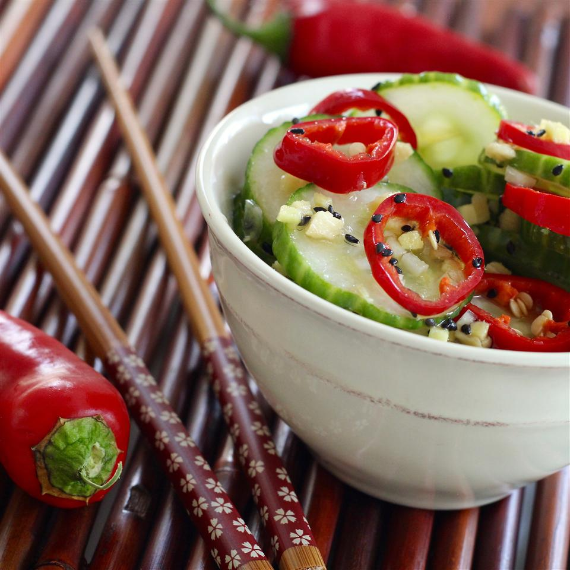

Asian Cucumber Salad

Description
This is a really delicious, light salad. This recipe can be prep ahead of time so you can enjoy it for lunch or dinner. It is so simple anyone can do it.
The nutrition facts is based on the amount of the ingrediants below. Per serving:110 calories; protein 1.5g; carbohydrates 15.4g; fat 5.5g; sodium 780.3mg.
Ingredients
- 2 cucumbers - halved lengthwise, seeded, and sliced
- 2 teaspoons salt
- ½ cup rice vinegar
- ¼ cup white sugar
- 2 tablespoons sesame oil
- 1 tablespoon minced garlic
- 1 tablespoon minced fresh ginger root
- 1 tablespoon sesame seeds
- 4 fresh red chile peppers, sliced
Steps
- Put the cucumber slices in a colander and sprinkle with salt; set aside to drain for 1 hour.
- Whisk the vinegar and sugar together until the sugar is dissolved; add the sesame oil, garlic, ginger, and sesame seeds; stir.
- Rinse salt off the cucumber slices by running under cold water; place in a large bowl with the sliced red chile peppers. Drizzle the dressing over the vegetables and toss to coat. Serve immediately.